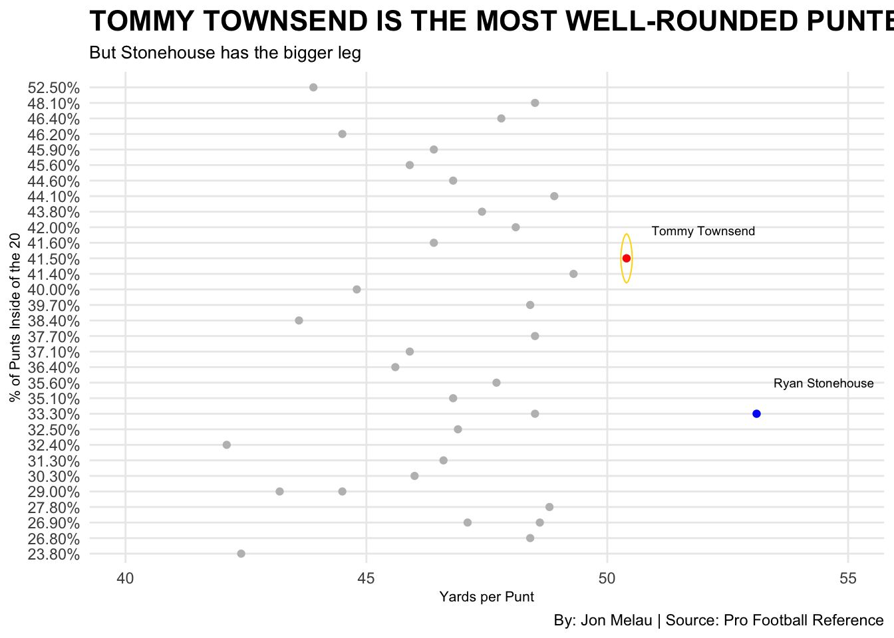
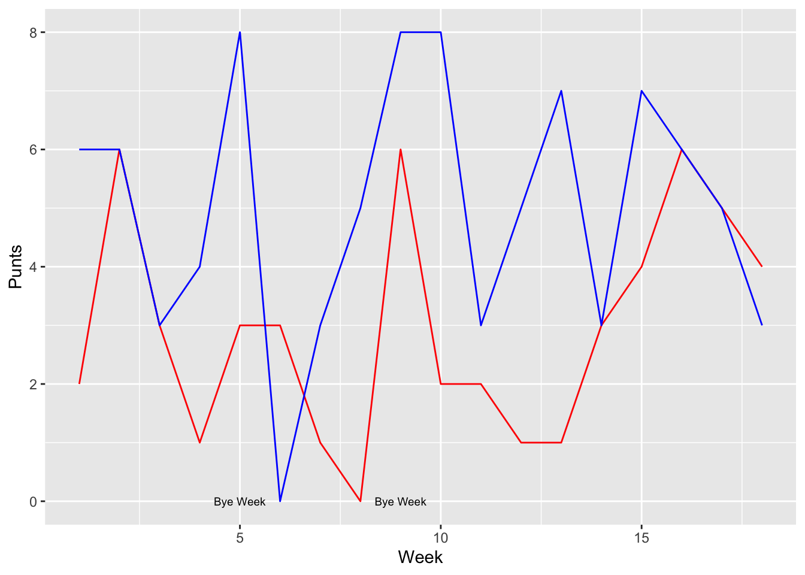
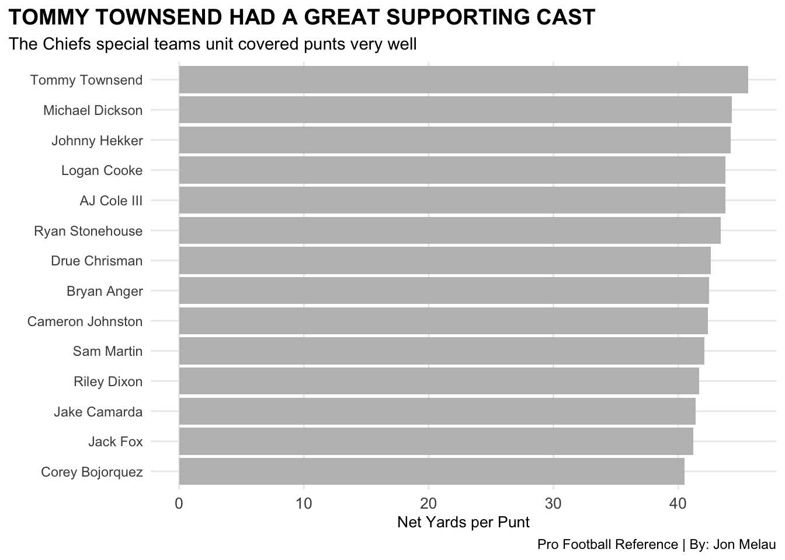

Code
library(tidyverse)
library(ggplot2)
library(ggalt)
library(labeling)
library(ggrepel)Jon Melau
April 16, 2023
Kansas City Chiefs punter Tommy Townsend was awarded 2022 NFL AP First Team All-Pro at the punter position. Some would regard First Team All-Pro as being at the pinnacle of your position when it comes to productiveness and skill level. 50 members of the Associated Press vote on who receives this prestigious award. Townsend received over half (28/50) of the votes for First Team All-Pro. Townsend becomes the first Chiefs punter to receive first team honors, alongside teammates Patrick Mahomes (QB) and Travis Kelce (TE).
Townsend being selected to first team honors left a sour taste in the mouths of some members of the media. Fans on twitter were outraged with the decision to select Townsend over the likes of rookie punter Ryan Stonehouse, who broke the NFL’s oldest single-season record in 2022. The Tennessee Titans punter averaged 53.1 yards per punt during the regular season, allowing him to set the single season record. Stonehouse smashed the previous record of 51.4 yards, set by Sammy Baugh in 1940.
Stonehouse actually received 13 votes for first team honors, but with Townsends 28 votes there was not much of a race.
Although records stand until they are broken, Super Bowl Champions are engraved forever. The Kansas City Chiefs would go on to win Super Bowl LVII with a 38-35 victory over the Philadelphia Eagles. On the other hand, Tennessee was knocked out of the NFL Playoffs in a week 18 nail-biting loss to the Jacksonville Jaguars, who walked away with the division title. The Titans finished the 2022 season with a record of 7-10, while the Kansas City Chiefs finished with a record of 14-3.
Players, coaches, and fans of the NFL know how integral special teams is to the success of a football team. Special teams is the easiest facet of the game to make mistakes in, as it is also one of the most important ways to help your team win a game. The question being asked here is, “how important was Tommy Townsend to the success of the Kansas City Chiefs this season, and did Ryan Stonehouse get snubbed from first team honors because of team success?”
First we want to take a look at individual stats and how these two punters compare to the rest of the punters in the NFL. Are these really the two punters that should be in the running for AP First Team All-Pro simply based solely on the numbers that they produced?
Rows: 34 Columns: 19
── Column specification ────────────────────────────────────────────────────────
Delimiter: ","
chr (5): Player, Tm, Pos, TB%, In20%
dbl (14): k, Age, G, GS, Pnt, Yds, Y/P, RetYds, Net, NY/P, Lng, TB, In20, Blck
ℹ Use `spec()` to retrieve the full column specification for this data.
ℹ Specify the column types or set `show_col_types = FALSE` to quiet this message.ggplot() +
geom_point(data = punting_data, aes(x = `Y/P`, y = `In20%`), color = 'grey') +
geom_point(data = Tommy_Townsend1, aes(x = `Y/P`, y = `In20%`), color = 'red') +
geom_point(data = Ryan_Stonehouse1, aes(x = `Y/P`, y = `In20%`), color = 'blue') +
geom_encircle(data = Tommy_Townsend1, aes(x = `Y/P`, y = `In20%`), s_shape = 0, expand = -0.15, color = "gold") +
geom_text(aes(x = 350, y = 32, label = "Tommy Townsend: Pin-point Accuracy,\nRyan Stonhouse: Hitting Bombs")) +
geom_text(aes(x=52, y=21.8, label="Tommy Townsend"),size=2.5, color="black") +
geom_text(aes(x=54.5, y=12, label="Ryan Stonehouse"),size=2.5, color="black") +
labs(title = "TOMMY TOWNSEND IS THE MOST WELL-ROUNDED PUNTER",
subtitle = "But Stonehouse has the bigger leg",
x = "Yards per Punt", y = "% of Punts Inside of the 20",
caption = "By: Jon Melau | Source: Pro Football Reference") +
scale_x_continuous(limits = c(40, 55)) +
theme_minimal() +
theme(
plot.title = element_text(size = 16, face = "bold"),
axis.title = element_text(size = 8),
plot.subtitle = element_text(size = 10),
panel.grid.minor = element_blank()
)
Tommy Townsend appears to be the most efficient in these two categories. The reason that percentage of punts inside of the 20-yard-line was used as the y-axis is mainly due to the fact that field position plays a large role in the percentage of teams scoring points. According to PHDFootball, teams that are 1 yard away from the endzone have a 95% chance of scoring any points, and an 85% chance of scoring at least a field goal. As the yardage moves more in the negative, the lower the percentage of scoring gets.
Although being naturally good at punting is going to translate into special team success, as well as overall team success, having a good supporting cast will inevitably lead to winning games. The main factor that separates Townsend from Stonehouse was the amount of times each of them had to punt. The Kansas City Chiefs ended up as the highest scoring offense in the NFL in 2022 (29.2 PPG), so it wasn’t much of a surprise that Tommy Townsend only punted 53 times all year (26th out of 36). On the flip side, the Tennessee Titans finished 27th in scoring (17.5 PPG), causing Stonehouse to punt a league high 90 times. Most would think that punting this many times would actually lower your average yards per punt, but Tennessee was so bad at moving the ball down the field, that they found themselves punting from deep in their own territory on almost every 4th down.

Clearly offensive success rate plays a major role in the amount of times a punter is on the field. To say the least, it is impressive that Stonehouse was able to break this long-lasting record considering leading the league in punts.
Another big factor that must be looked at is punt net yards per punt. Yes, Stonehouse had the most punts, most yards, and the highest average yards per punt, but when you look deeper, Tommy Townsend led the league in punt net yards per punt. This is mainly in part of the Chiefs special teams being an elite unit and being able to cover punts very well. At the same time you have to take hang time into account where the punt team is given more time to get to the returner.
ggplot() +
geom_bar(data=punting_data2, aes(x=reorder(Player, `NY/P`), weight=`NY/P`), fill= "grey") +
coord_flip() +
labs(
title = "TOMMY TOWNSEND HAD A GREAT SUPPORTING CAST",
subtitle = "The Chiefs special teams unit covered punts very well",
x = "",
y = "Net Yards per Punt",
caption = "Pro Football Reference | By: Jon Melau"
) +
theme_minimal() +
theme(
plot.title = element_text(size = 14, face = "bold"),
axis.title = element_text(size = 10),
plot.subtitle = element_text(size=11),
panel.grid.minor = element_blank(),
axis.text.x = element_text(size = 10),
plot.title.position = "plot"
)
After taking in all of this data, it is clear that the all around talent and success of the Kansas City Chiefs allowed Tommy Townsend to be noticed as the best punter in the NFL, according to the AP First Team All-Pro awards. We can’t forget to acknowledge the incredible feat accomplished by Ryan Stonehouse as a rookie. If the Titans record reflected Stonhouse’s accomplishments, then I think this would be a different story.
Townsend was transcended this year through the likes of team success, as Stonehouse was overshadowed by the struggle of the offense. Based on the punter percentage inside of the 20 yard-line and the net return yards per punt, the 2022 NFL punting crown must go to Tommy Townsend.